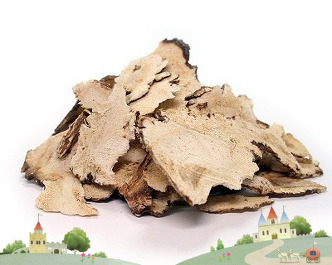

아토피 예방
성유탕

항염증효과를 지녀 아토피에 좋다.
당근
당근은 생 것도 좋지만 볶아서 먹는 것이 좋은데, 당근에는 비타민A의 모체인 카로틴이 식물성식품 중에서 가장 많이 들어 있다.
이 카로틴은 지용성이기 때문에 기름과 함께 요리하면 흡수율이 좋아진다. 이 비타민A가 아토피를 치료하는 역할을 한다.
녹두
곡류 중에서도 찹쌀은 열성이므로 멥쌀을 먹되 보리, 콩, 녹두 등이 더 냉성 곡류이므로 가급적 혼식을 하는 게 좋다. 특히 녹두가 좋다.